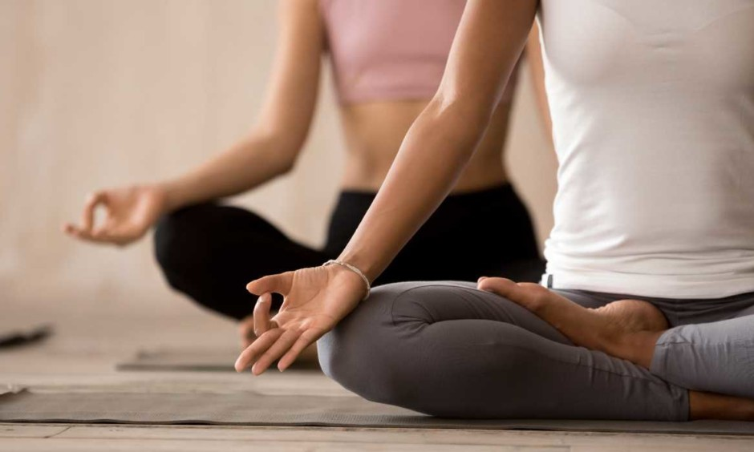
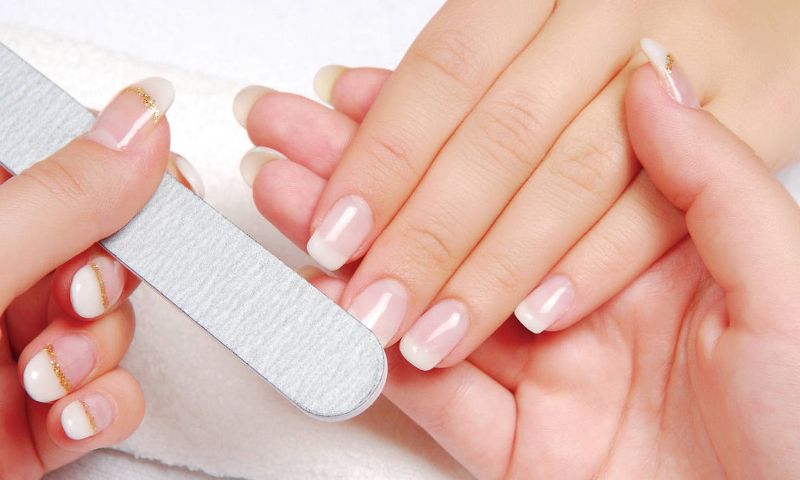

Masajes
Distintos tipos de masajes de todo el mundo, solo para su confort.

Meditación
Sesiones guiadas en grupo o personalizadas, con nuestros expertos.
Faciales
Tratamientos de belleza para un cutis de apariencia más joven y brillante.

Manicuría y pedicuría
Con manicuristas certificados expertos.
Circuito
Circuito hídrico por nuestra pileta, jakuzzi y sauna, para conseguir una relajación más profunda.